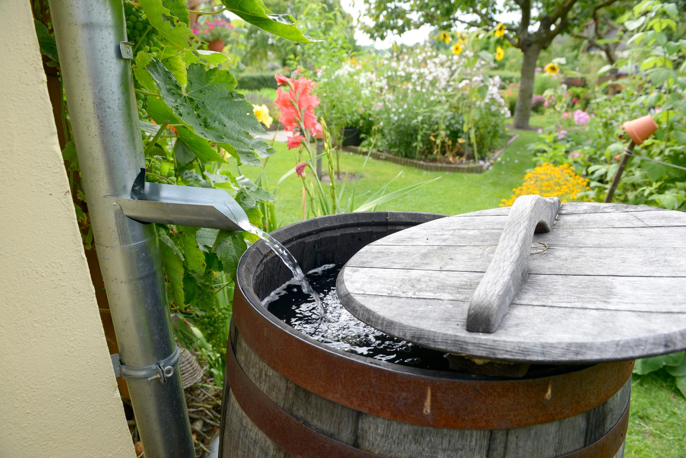
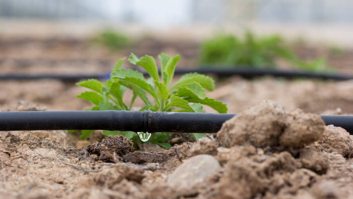
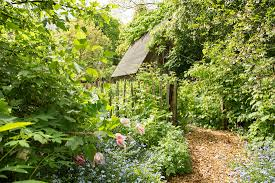
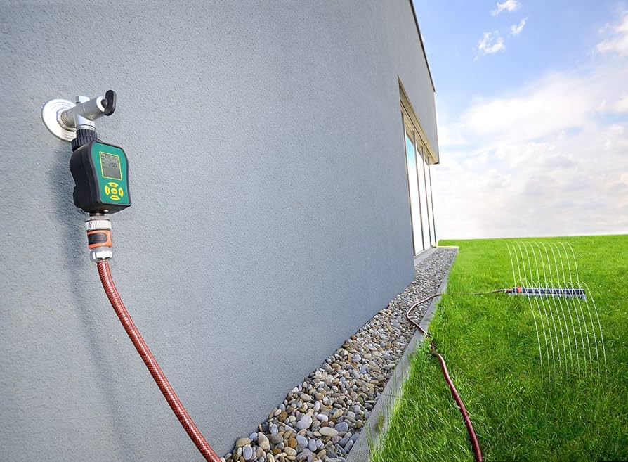
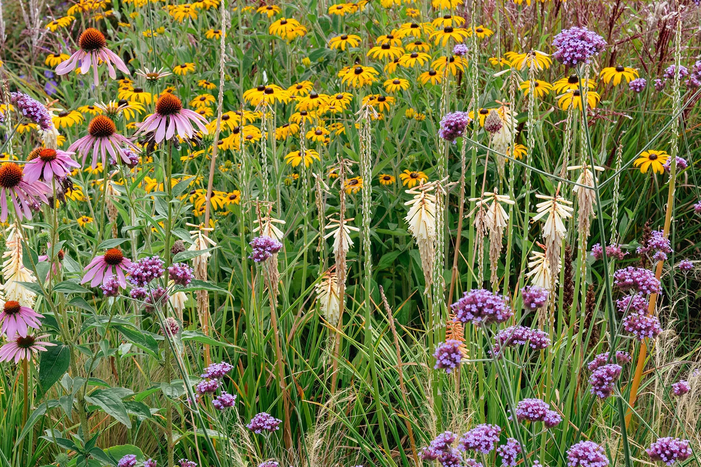

Nachhaltige Gartenbewässerung: So sparst du Wasser und hilfst der Umwelt!
Hey, Pflanzenfreunde! Wasser ist kostbar, und im Garten kann man ganz schön viel davon verbrauchen. Aber keine Sorge, wir zeigen euch, wie ihr eure Pflanzen nachhaltig bewässern könnt – so spart ihr Wasser, schont die Umwelt und eure Pflanzen werden es euch danken!
1. Regenwassernutzung: Das kostenlose Nass vom Himmel!
Regenwasser ist das beste Wasser für eure Pflanzen – und es ist kostenlos! Stellt einfach ein Regenfass im Garten auf und fangt das Wasser von eurem Dach auf. So habt ihr immer genug Wasser zum Gießen, und die Umwelt freut sich!
2. Tropfbewässerung: Wasser direkt an die Wurzeln – effizient und sparsam!
Tropfbewässerungssysteme sind super effizient, weil sie das Wasser direkt an die Wurzeln der Pflanzen leiten. So verdunstet weniger Wasser, und eure Pflanzen bekommen genau die Menge, die sie brauchen. Perfekt für alle, die Wasser sparen wollen!
3. Mulchen: Bodenfeuchtigkeit speichern und Unkraut bekämpfen – zwei Fliegen mit einer Klappe!
Mulch ist wie eine schützende Decke für eure Beete. Er hält die Bodenfeuchtigkeit, unterdrückt Unkraut und sieht auch noch schick aus. Ob Rindenmulch, Stroh oder Grasschnitt – es gibt viele Möglichkeiten zum Mulchen. Probiert's aus!
4. Wassertimer: Gießen, wenn die Pflanzen es brauchen – automatisch und stressfrei!
Mit einem Wassertimer könnt ihr die Bewässerung eures Gartens ganz entspannt automatisieren. Stellt einfach die Zeiten ein, zu denen eure Pflanzen Wasser brauchen, und der Timer erledigt den Rest. So müsst ihr euch keine Sorgen mehr machen, dass eure Pflanzen vertrocknen.
5. Pflanzenauswahl: Die richtigen Pflanzen für den richtigen Standort!
Nicht alle Pflanzen brauchen gleich viel Wasser. Wählt Pflanzen, die an die klimatischen Bedingungen eures Gartens angepasst sind. Heimische Arten, mediterrane Pflanzen oder Sukkulenten sind oft sehr genügsam und brauchen wenig Wasser. So spart ihr Wasser und habt trotzdem einen schönen Garten!
Mit diesen Tipps wird euer Garten zum Wasserspar-Paradies! Eure Pflanzen werden es euch danken, und die Umwelt sowieso. Also, ran an die Gießkanne – aber mit Köpfchen! 😉